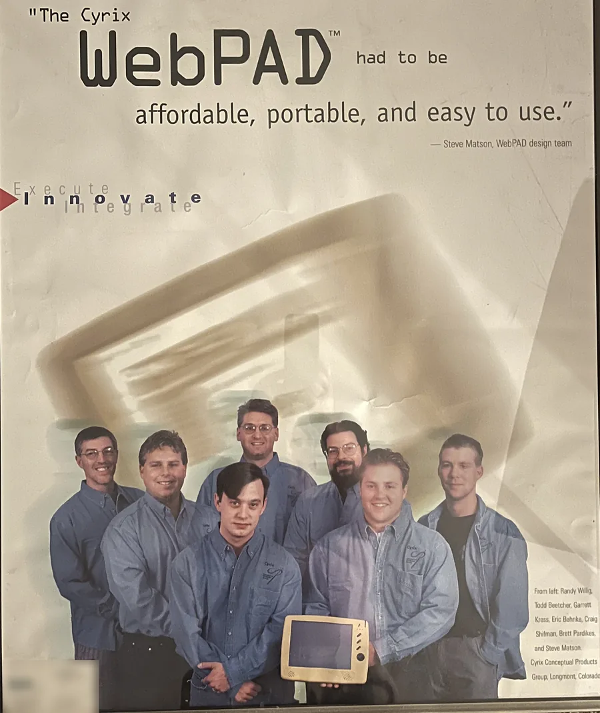

I’m not a teacher. I’m a guy who uses AI every day and has a lot of fun with it, and I want you to have that too.
I should say up front: my background is very technical. In 1997 I was part of the Cyrix team that designed the WebPAD, an early tablet built to be affordable, portable and easy to use, the kind of idea that years later became the tablets we all carry. I’ve spent my career in technology, in semiconductors, hardware, media and now AI. But please hear this: this isn’t about being technical. It’s about wanting to bring more enjoyment into your life. Learning AI is no different from learning any other app, and the real skill is having a conversation with an expert in your pocket and knowing what to expect from it.

Origin of iPad concept!It started on a golf course, when a friend told me he wanted to use AI and was embarrassed that he didn’t know how. I realized a lot of good, capable people are in exactly that spot, and nobody is talking to them in a way that feels fun.
Here is the part I most want you to hear. Life is full of chaos, fear and anxiety, from many different places, and now that includes the big unknown boogeyman of AI. Everyone is wrestling with a lot of emotions and trying to manage massive amounts of time and change, and those feelings are not untrue. AI was a tool of chaos for me that became a source of capability. Now I arrive at daily moments of empowerment because of it. Empowerment is one of the most grounding emotions you can have, a safe haven, and it is part of the antidote to those other feelings. Empowerment through capability, and through the capability to help the people around you. You would be surprised how much it does.
Here’s what I’ve learned that I didn’t expect. I can’t imagine living without AI now, and it has almost nothing to do with productivity. It’s that it makes me better for the people around me: my family, my friends, the people I work with, even how I treat my own house. Think about the things you’ve decided you couldn’t live without, your phone, your microwave. You didn’t expect to need them either. I’ve gotten there with AI, and I’d like to help you get there too.
The best word I have for it is partner. You’re not using a tool. You’re working with something that helps you find capabilities you didn’t know you had. That part is really exciting, and a little evangelical on my part, because I kept thinking, I didn’t know I could do all this.
So here’s what I do. I use it to cook a brisket, to fix a light that had been broken for ten years, to fix things in my car, to write a birthday card that sounds like me, to invent a cocktail for friends and then turn the leftover lemon pulp into blueberry-lemon pancakes the next morning, to find the best place to park on the way to Denver, and to have a storyteller narrate the history of a valley while I drive through it. Small moments. Big enjoyment. Here is the longer list of what I’ve done with Doc.

 So long ago...
So long ago...I use it every day, but not all day. The point isn’t more screen time. It’s more time away from the screen, and more real results: a dinner cooked, a note sent, a thing fixed.
Not long ago I helped a guy log in to an AI assistant for the first time and write his first prompt, something to help himself. He was so thankful that it stuck with me. It doesn’t take much. It’s one first step, like diving into the pool. I’m not here to swim the whole journey with you. I’ll make sure you can use it on your phone and your computer and organize some basic capabilities, and where you take it from there is up to you. If all you ever do is recipes and letters, that’s wonderful. I just want to remove whatever has been stopping you.
That’s what I’d like to share. I’ll show you the exact words I typed, including the times it got things wrong, and you’ll find your own moments. When you catch yourself saying “I can do that,” that’s the whole point.
I’d love to have you. The FAQ has the practical answers, and if you still have a question, write me.
Todd
What I’ve done
Thirty years in technology
IBM and Compaq early on, then the Cyrix team that designed the WebPAD in 1997, and on through semiconductors, hardware and media.
Then I started from zero in AI
I hadn’t programmed in thirty years and thought Python was a snake. I built an iOS app, AI tools and working prototypes anyway. Read how.
Showing up
Seventy kids and a canyon
One summer I drove a school bus from Denver up Left Hand Canyon to Ward, three days a week, with a playlist and a speaker running the whole way. Take the mission.
39 states, two daughters
Soccer in 25 states, swimming in 30. A mom and a dad who showed up every time, and the family story behind why.
How I think
A Daily Dose of Cognitive Flow
How to use AI to extend your thinking instead of replacing it, and stay the author of your own mind.
The Tractor and the Algorithm
The invisible know-how behind every powerful tool, and why some people are handed one and can’t start it.
A Crime With No Criminal
Who quietly removed the ways young people used to earn a sense of purpose, and why nobody noticed.